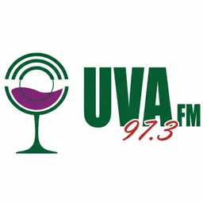

Hub · Género
Radios de noticias y talk
167 emisoras en vivo en VivoRD
La radio informativa dominicana sigue siendo el canal más rápido para boletines, entrevistas y análisis mientras conduces o trabajas. A diferencia de la televisión, permite multitarea y actualización continua: desde el amanecer con resúmenes de prensa hasta mesas nocturnas de opinión. En VivoRD clasificamos como noticias y talk las emisoras cuyo nombre o descripción mencionan explícitamente actualidad, informativos, talk o espacios de opinión.
Este criterio es automático y conservador: si no hay evidencia textual en nuestros datos, la emisora no aparece aquí aunque ocasionalmente transmita boletines. Preferimos evitar inventar géneros. Dentro del grupo encontrarás señales de Santo Domingo, Santiago y ciudades provinciales con enfoque periodístico o conversacional.
Cada ficha enlazada tiene reproductor web y metadatos verificables de ciudad y frecuencia FM cuando constan. Si un stream falla revisiones recientes, la emisora se excluye del listado hasta recuperarse, coherente con nuestra política de salud de URLs.
Para profundizar, abre la guía de radios de noticias enlazada abajo y compara con hubs de ciudad si te interesa el contexto geográfico. La información en antena complementa —no sustituye— a medios escritos y digitales.
Puedes alternar entre emisoras de este listado desde el móvil o el escritorio: cada ficha de VivoRD conserva su propio reproductor, metadatos de ciudad y descripción editorial sin duplicar la señal del titular.
Emisoras


